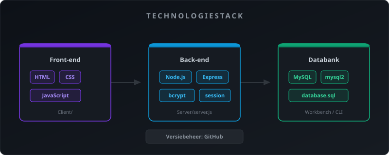
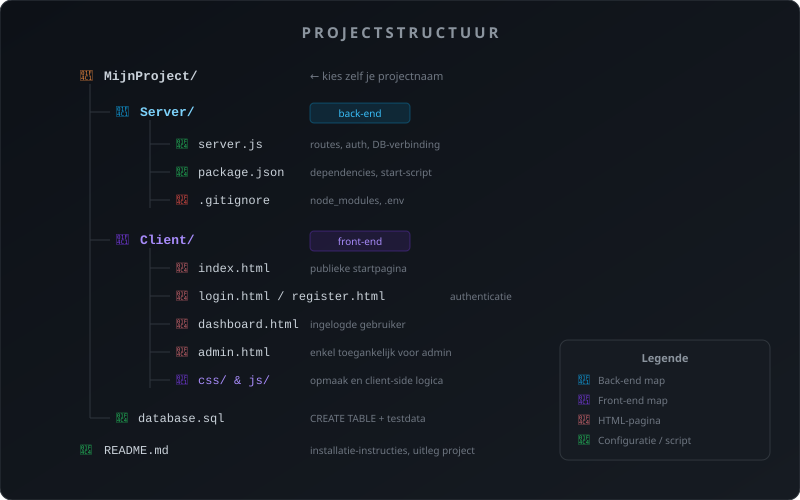
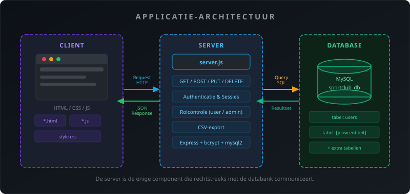
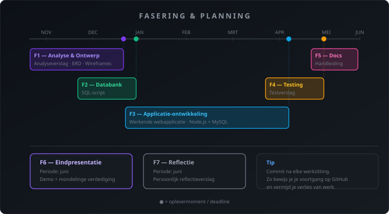

GIP-Opdracht
- Je kan zelfstandig een volledig full-stack webproject plannen en uitvoeren
- Je past alle geleerde technologieën toe in een eigen project naar keuze
- Je documenteert je werk professioneel en presenteert het aan een jury
1. Wat is het GIP?
Het GIP (Geïntegreerde Informatica Proef) is je eindproject van het 6e jaar. Je bouwt zelfstandig een volledige webapplicatie waarbij je alles wat je hebt geleerd samenbrengt:
- Front-end: HTML, CSS en JavaScript
- Back-end: Node.js (Express)
- Databank: MySQL
- Versiebeheer: GitHub
Je kiest zelf een onderwerp. De technische vereisten hieronder gelden voor elk project, ongeacht het onderwerp.
2. Kies je eigen onderwerp
Je bepaalt zelf waarvoor je applicatie dient. Dit mag van alles zijn: een boekenbibliotheek, een sporttracker, een receptenapp, een reservatiesysteem, een hobbyprojectbeheerder — wat je maar wil, zolang het zinvol en uitvoerbaar is.
- Het onderwerp heeft minstens één hoofdentiteit die je kunt beheren (toevoegen, aanpassen, verwijderen, bekijken)
- Gebruikers kunnen zich registreren en inloggen
- Er is een verschil tussen een gewone gebruiker en een beheerder (admin)
- Het is origineel — geen kopie van een bestaand platform
Bespreek je onderwerp eerst met de begeleider vóór je begint met de analyse.
3. Technische vereisten

Dit zijn de minimale technische vereisten. Je project moet aan al deze punten voldoen. Je mag altijd extra functionaliteit toevoegen.
3.1 Technologiestack
| Laag | Technologie |
|---|---|
| Front-end | HTML, CSS, JavaScript |
| Back-end | Node.js (Express) |
| Databank | MySQL |
| Versiebeheer | GitHub |
3.2 Gebruikersbeheer
- Registratie met gebruikersnaam of e-mailadres en wachtwoord
- Login en logout
- Wachtwoorden worden gehasht opgeslagen (bcrypt)
- Sessies worden beheerd via
express-session - Er zijn minstens twee rollen: gebruiker en admin
- Elke gebruiker ziet alleen zijn eigen data (tenzij admin)
- De admin kan alle data raadplegen en beheren
3.3 CRUD op de hoofdentiteit
De kern van je applicatie is het beheren van één (of meer) hoofdentiteiten. Voor elke entiteit moet je het volgende kunnen:
- Create — een nieuw item toevoegen via een formulier
- Read — een overzicht tonen van alle items van de ingelogde gebruiker
- Update — een bestaand item aanpassen
- Delete — een item verwijderen
Elk item heeft minstens: een titel/naam, een omschrijving, een datum en een status.
3.4 Accountpagina
- De ingelogde gebruiker kan zijn eigen gegevens raadplegen
- De gebruiker kan zijn wachtwoord aanpassen
3.5 Rapportering
- Een overzichtspagina met statistieken over de data (bv. aantal items per status)
- Een CSV-export van de data van de ingelogde gebruiker
3.6 Databank
- Minstens twee tabellen met een relatie (Foreign Key)
- Correct gebruik van Primary Keys, Foreign Keys en datatypes
- Een
.sql-bestand met de CREATE-statements en voorbeelddata
3.7 Versiebeheer
- Het volledige project staat op GitHub
- Regelmatige commits — minstens na elke werkzitting
- Een duidelijke
README.mdmet uitleg over het project en hoe het te installeren
4. Projectstructuur

Je project volgt deze basisstructuur. De opsplitsing Server/ en Client/ is verplicht. Je mag mappen toevoegen of uitbreiden naargelang je project.
MijnProject/
├── Server/
│ ├── server.js ← alle back-end routes en logica
│ ├── package.json
│ └── .gitignore
├── Client/
│ ├── index.html ← startpagina (publiek)
│ ├── login.html
│ ├── register.html
│ ├── dashboard.html ← pagina voor ingelogde gebruiker
│ ├── admin.html ← pagina enkel voor admin
│ ├── css/
│ │ └── style.css
│ └── js/
│ ├── auth.js
│ ├── dashboard.js
│ └── admin.js
├── database.sql
└── README.mdDe server is de enige component die rechtstreeks met de databank communiceert. De front-end praat alleen via HTTP-requests met de server.

5. Fasering & planning

| Fase | Periode | Wat lever je op? |
|---|---|---|
| 1. Analyse & ontwerp | November | Analyseverslag, ERD, wireframes, planning |
| 2. Databank | December | Werkend SQL-script met testdata |
| 3. Applicatie-ontwikkeling | Januari – april | Werkende webapplicatie |
| 4. Testing & debugging | April | Testverslag |
| 5. Documentatie | Mei | Gebruikershandleiding (PDF) |
| 6. Eindpresentatie | Juni | Demo en mondelinge verdediging |
| 7. Reflectie | Juni | Persoonlijk reflectieverslag |
6. Oplevermomenten
| Deadline | Wat? |
|---|---|
| Eind november | Analyseverslag + ERD |
| Eind december | Werkende databank |
| Eind april | Functionerende applicatie |
| Eind mei | Handleiding + documentatie |
| Half juni | Mondelinge presentatie + demo |
| Eind juni | Reflectieverslag |
7. Evaluatie
| Domein | Criteria | Punten |
|---|---|---|
| Analyse & planning | Probleemstelling, ERD, wireframes, planning | 10 |
| Ontwikkeling | Codekwaliteit, werking CRUD, Node.js + MySQL integratie | 35 |
| Testing & onderhoud | Testplan, debugging, verbeteringen | 10 |
| Versiebeheer | GitHub-gebruik, commits, structuur | 10 |
| Documentatie | Technische en gebruikersdocumentatie, README | 10 |
| Presentatie | Demo, mondelinge toelichting | 10 |
| Attitudes | Samenwerking, deadlines, communicatie | 10 |
| Reflectie | Zelfevaluatie en leerproces | 5 |
| Totaal | 100 |
8. Eindproducten
Bij de finale indiening verwachten we de volgende producten:
- Werkende webapplicatie (lokaal uitvoerbaar via
npm start) - GitHub-repository met regelmatige commits
database.sqlmet volledige databasestructuur en testdataREADME.mdmet installatie-instructies en uitleg- Analyseverslag met ERD en wireframes
- Testverslag
- Gebruikershandleiding (PDF met screenshots)
- Reflectieverslag
9. Mondelinge verdediging
De verdediging duurt 15 minuten: 10 minuten demo + 5 minuten vragen. Je toont je applicatie live op jouw laptop — zorg dat alles lokaal werkt.
Wat wordt beoordeeld?
- Werkt de applicatie zoals beschreven in de functionele analyse?
- Kan je uitleggen WAAROM je bepaalde technische keuzes maakte?
- Kan je omgaan met een onverwachte vraag (bv. "Toon me de admin-pagina")?
- Is je code leesbaar en netjes gedocumenteerd?
Oefen je demo minstens één keer met iemand die de applicatie niet kent. Dit helpt je ontdekken welke stappen je vanzelfsprekend vindt maar die niet vanzelfsprekend zijn voor anderen.
Voorbereiding: zie GIP H06 — sectie "Demo voorbereiden".